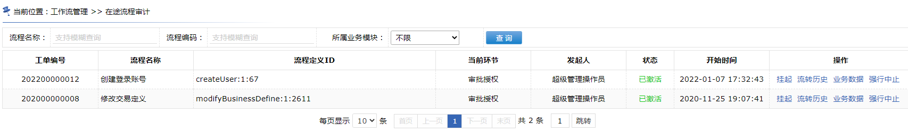
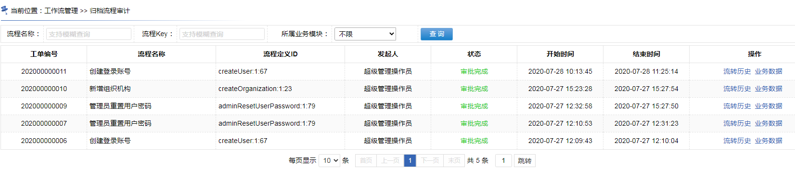

22.3.6、附录：管理员审计流程
功能位置
“流程实例的挂起和激活”属于系统审计范畴，所以只有“流程管理操作”角色可以处理，普通用户无法做。
进入菜单
“工作流管理 >> 在途流程审计”

~~~~~~~~~~~~~~~~~~~~~~~~~~~~~~~~~~~~华丽的分割线~~~~~~~~~~~~~~~~~~~~~~~~~~~~~~~~~~~
进入菜单
“工作流管理 >> 归档流程审计”

调用代码
（1）直接调用workflowInstanceMvc.edk4jMvc文件中的mvc“/workflowManage/queryUserDealedProcessInstanceList”，关联到wokflowInstanceBpm.edk4jBpm文件中的“wokflowInstance.queryUserDealedProcessInstanceListBL”。
（2）将要审计的用户编号传入，还可以选择性的传入审计起始日期